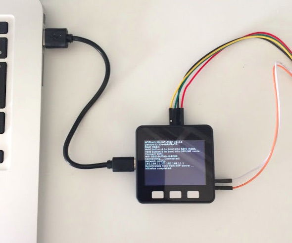
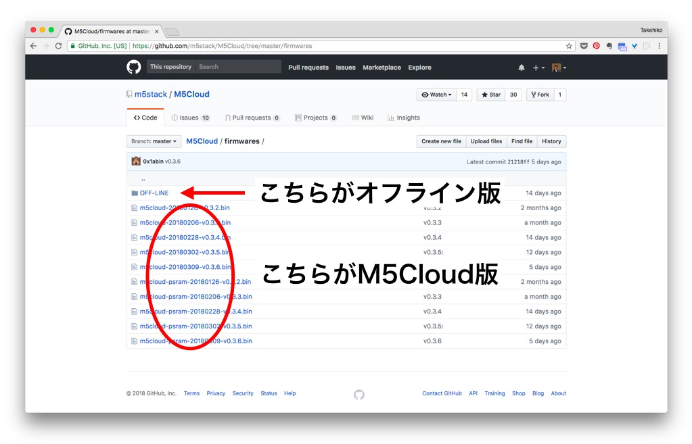
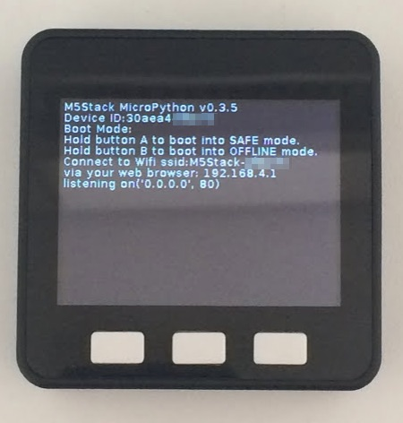
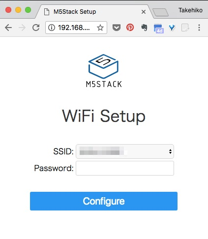

「AmbientでIoTをはじめよう」の第4回は、M5StackとセンサをMicroPythonで制御して、 センサデータをクラウドに送信して記録する事例を紹介します。 Arduinoで制御する例は「M5Stackでセンサデータを測定し、クラウドに送る (Arcuino編)」をご覧ください。

M5StackはEspressif社のマイコンESP32が搭載されたコンパクトなIoT端末です。 M5Stackについては次のサイトをご覧ください。
M5StackのMicroPython開発環境には次の二つがあります。
クラウドでソースコードを管理する開発環境。 Web上でプログラムを開発し、Wi-Fi経由でプログラムをM5Stackに送り、実行します。
ローカルのPCでソースを管理する環境。 PCでプログラムを開発し、シリアル回線経由でプログラムをM5Stackに送り、実行します。
公式サイトの説明に沿って環境を設定していくとM5Cloud環境になりますが、 M5Cloudは現時点(2018年3月20日)ではβ版で、一度つけたプロジェクト名が変更できないなど、 まだ荒削りなところがあります。また、ソースコードのバージョン管理機能がないので、 今回はローカル開発環境を使います。
M5StackとUSBで通信するために、 USBドライバ「SiLabs CP2104 Driver」をダウンロードしてインストールします。 ここはArduino IDEで使う場合と共通です。
esptoolはシリアル回線経由でESP8266やESP32のフラッシュメモリーを消去したり バイナリーファイルを書き込めるツールです。
過去にesptoolをインストールしていなければ、次のようにしてesptoolをインストールします。
$ sudo pip install esptool
以前にインストールしていれば、次のようにして更新します。
$ sudo pip install -U esptool
M5Stack用のMicroPythonファームウェアのダウンロードページでファームウェアをダウンロードします。 この時、M5Cloud用とオフライン用があるので、オフライン用をクリックし、最新のファームウェアを選択します。

M5StackをUSBケーブルでPCに接続し、esptoolを使い、まずerase_flashコマンドでフラッシュを消去し、次にwrite_flashコマンドでファームウェアを書き込みます。
$ esptool.py --chip esp32 --port /dev/tty.SLAB_USBtoUART erase_flash
$ esptool.py --chip esp32 --port /dev/tty.SLAB_USBtoUART write_flash --flash_mode dio -z 0x1000 m5stack-20180228-v0.3.4.bin
ファームウェアを書き込むと、M5Stackの画面に次のようなメッセージが表示されます。

M5Stackが一時的にWi-Fiアクセスポイントになっているので、 画面に表示されたssidにPCやスマートフォンで接続します。パスワードは設定されていません。 ブラウザで192.168.4.1にアクセスすると、次のような設定画面が表示されます。

お使いのWi-FiルーターのSSIDとPasswordを入力してConfigureをクリックすると、 M5StackのWi-Fi環境が設定され、Wi-Fiに接続されます。
## M5StackとMicroPython開発環境の動作確認 PCからCoolTermなどの通信プログラム、あるいはcuコマンドなどでM5Stackにつなぎ、リターンキーを押すと、次のようにMicroPythonのプロンプトが表示されます。MicroPythonの文を入力すると、実行されます。 ちなみに、cuコマンドは「~.(チルダ ピリオド)」で切断できます。 $ sudo cu -s 115200 -l /dev/tty.SLAB_USBtoUART Connected. >>> print('hello world') hello world >>> >>> from m5stack import lcd # lcdモジュールをインポート >>> lcd.clear() # lcdをクリア >>> lcd.print('hello') # lcdにhelloと出力される >>> ~. Disconnected. # 温湿度・気圧センサBME280を使う ## M5StackにBME280をつなぐ M5Stackの裏側の写真 Arduino編と同様にM5Stackに温湿度・気圧センサBME280をつないでみます。 詳細は「[M5Stack(Arduino編)](https://ambidata.io/samples/m5stack/m5stack-arduino/)」をご覧ください。 BME280を接続したら、M5StackをUSBケーブルでPCに接続し、CoolTermやcuなどの通信プログラムを起動します。 次のプログラムを入力すると、BME280のI2Cアドレスを確認できます。 センサの動作が簡単に確認できるところは対話モードは非常に便利です。 >>> from machine import I2C, Pin # I2CモジュールとPinモジュールをインポート >>> i2c = I2C(sda=Pin(21), scl=Pin(22)) # I2Cを初期化 >>> print('0x%x' % i2c.scan()[0]) # BME280のI2Cアドレスを確認する 0x76 >>> ## BME280ライブラリをM5Stackに転送する M5StackからBME280をアクセスするプログラムはGithubに置きました。 * [ambient-python-lib](https://github.com/AmbientDataInc/ambient-python-lib) [このページ](https://github.com/AmbientDataInc/ambient-python-lib)右上の 「Clone or download」をクリックし、「Download ZIP」をクリックして、 ZIP形式のファイルをダウンロードし、適当なディレクトリーで展開します。 BME280のライブラリはGithubに公開されているESP8266用MicroPythonライブラリ「[catdog2/mpy_bme280_esp8266](https://github.com/catdog2/mpy_bme280_esp8266)」を使いました。 PC上のファイルをM5Stackに転送するのはampyというコマンドが便利です。 ampyコマンドのインストールと使い方は「[ampy: MicroPythonマイコンとPCとのファイル転送ツール](https://ambidata.io/blog/2018/03/15/ampy/)」をご覧ください。 ```bash $ export AMPY_PORT=/dev/tty.SLAB_USBtoUART $ ampy put examples/M5_BME280/bme280.py $ ampy ls /flash boot.py config.json bme280.py ``` ## M5StackからBME280をアクセスする PCからM5Stackに接続し、以下のMicroPythonプログラムを入力すると、 BME280にアクセスして温度、湿度、気圧を取得し、表示するのが確認できます。 ```bash >>> import bme280 >>> from machine import I2C, Pin >>> i2c = I2C(scl=Pin(22), sda=Pin(21)) >>> bme = bme280.BME280(i2c=i2c) >>> print(bme.values) ('21.57C', '1017.90hPa', '40.41%') ``` ## BME280のデータをAmbientに送信する センサデータをAmbientに送信するMicroPythonライブラリはESP8266用のものと共通です。 BME280のデータをAmbientに送信するプログラムは次のようになります。 プログラム これらのプログラムも先程Githubからダウンロードしてきたものに含まれています。 main.pyのAmbientオブジェクトの初期化にご自分のチャネルIDとライトキーを設定し、 ampyでM5Stackに転送します。 ```bash $ ampy put ambient.py $ ampy put examples/M5_BME280/main.py $ ampy ls /flash boot.py config.json ambient.py main.py bme280.py ``` これでM5Stackに次のようにファイルが置かれます。 /flash +---boot.py config.json ambient.py main.py bme280.py /flashの下にmain.pyというファイルがあると、M5Stackがリセットされた時、そのプログラムが実行されます。 M5Stackをリセットして、Ambientサイトで設定したIDのチャネルページを見ると、次のように温度、湿度、気圧データが送信されているのが確認できます。 scsho_upython2.jpg # 温湿度・気圧・空気品質センサBME680を使う ## M5StackにBME680をつなぐ 温湿度・気圧に加えて、空気品質を測定できるBME680というセンサがあります。 これもM5Stackにつなげてみます。接続の詳細は「[M5Stack(Arduino編)](https://ambidata.io/samples/m5stack/m5stack-arduino/)」をご覧ください。 M5StackとBME680の写真 ## M5StackからBME680をアクセスする BME680をアクセスするPythonライブラリモジュールはBME680モジュールを提供している[Pimoroni社のもの](https://github.com/pimoroni/bme680)を使いました。 これを[MicroPythonで動かすためのアダプター](https://github.com/gkluoe/bme680)も使います。 ファイルはBME280をアクセスするプログラムと一緒にGithubに公開してあり、 すでにPC上にダウンロードされています。 次のようにM5Stackの/flashの下にbme680というディレクトリーを作り、必要なファイルを転送します。 BME280のアクセスから続いて操作している場合は、ここでM5Stackをリセットしてください。 ```bash $ ampy mkdir bme680 $ ampy put examples/M5_BME680/bme680/__init__.py /flash/bme680/__init__.py $ ampy put examples/M5_BME680/bme680/constants.py /flash/bme680/constants.py $ ampy put examples/M5_BME680/bme680/i2c.py /flash/bme680/i2c.py $ ampy put examples/M5_BME680/main.py ``` これでM5Stackのファイルシステムは次のようになります。 /flash +---boot.py config.json ambient.py bme280.py main.py bme680 +---__init__.py constants.py i2c.py M5Stackをリセットすると、今転送したmain.pyが実行され、 BME680で取得した温度、湿度、気圧がAmbientに送信されます。 # まとめ M5Stackは5.4cm x 5.4cmのコンパクトなケースにESP32、電池、320 x 240 TFTカラーディスプレイなどが搭載されたIoT端末です。拡張モジュールを積み重ねることで機能を拡張していけます。 MicroPythonで使うと、対話モードでセンサなどの動作を確認しながらプログラムを作っていけるので、 プロトタイプ段階で特に便利です。この記事はアンビエントデーターの下島が担当しました。